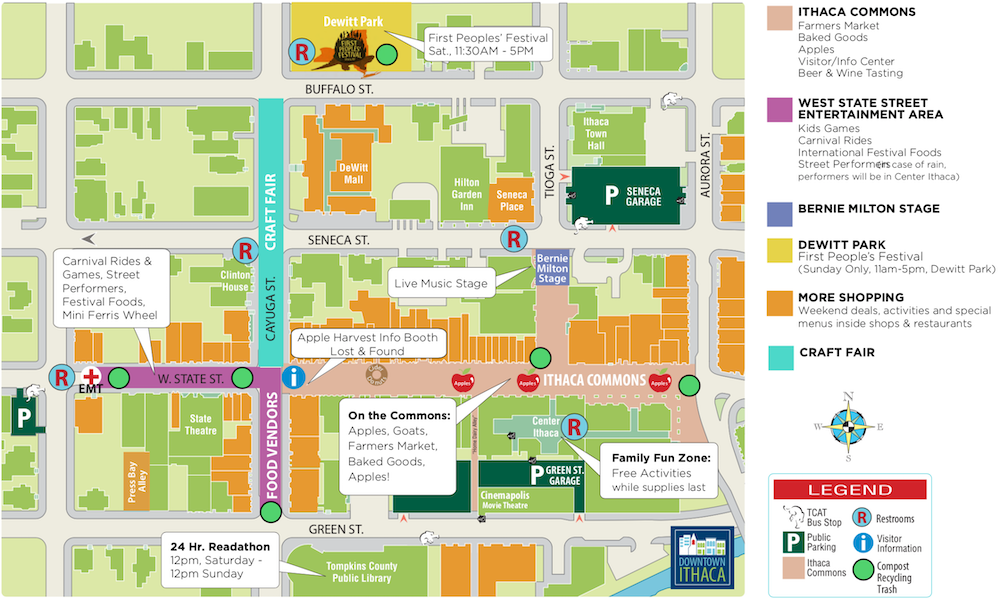

Info
Map Schedule
 Downtown IthacaTCAT Schedule
You'll find the TCAT schedule here. Be sure to plan your trip to the commons ASAP.
Weather
Find out what the weather will be like here. We recommend bringing an umbrella just in case! All events will remain open unless there are thunderstorms.